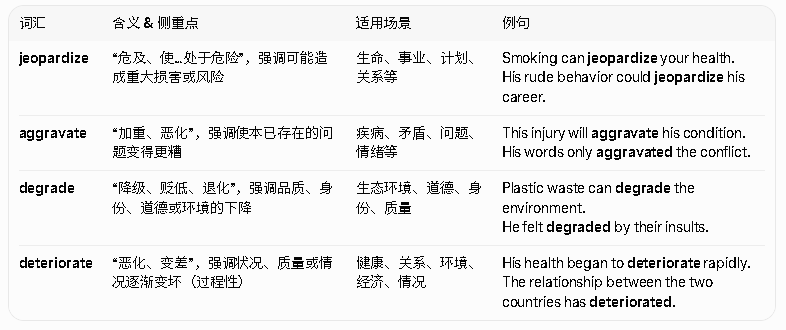
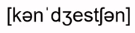
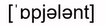
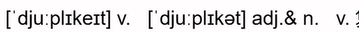
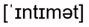

共 50 个词条 · 5 张附图（含音标截图）
aggravate /ˈæɡ.rə.veɪt/ v.加重，加剧，恶化，这是一个否定的，负面的词汇
The way his sister dealt with the problem did not help at all, but only aggravated the already difficult situation.他姐姐处理问题的方式没有任何帮助，只是加剧了已经很困难的情况。
aggravate the conflict even further 使冲突加剧
worsen v.加剧，变坏 en=使动

jeopardize = 直接把事情推向危险（最严重）
aggravate = 把已经坏的事弄得更坏
degrade = 品质/道德/环境下降、贬低
deteriorate = 状况逐渐恶化（最常用在健康、关系、环境逐渐变差）
speculate /ˈspek.jə.leɪt/ v.推测，猜测
It's important to look at the scientific facts and not speculate too much based on random opinions found on social media.重要的是要着眼于科学事实，而不是根据社交媒体上的随机观点进行过多推测。
speculate about the reasons for her resignation （这个词来自于resign，辞职的意思，加ation是名词）推测她辞职的原因
speculation n.推断
persist /pəˈsɪst/ v. 坚持; 持续
If symptoms(/ˈsɪmp.təm/（疾病的）症状，征兆，征候) persist then it is advised that you see your doctor again for more tests.
如果症状持续，建议你再去看一下医生，做更细致的检查。
those who persist in their dreams 坚持梦想的人
persistence n.坚持;持续 ence是名词后缀
disperse /dɪˈspɜːs/v.分散;传播
As the smoke began to disperse on the stage, the band came on.当舞台上的烟开始散去时，乐队登场了。disperse quickly 很快散开
visual adj.视觉的，视力的 vis=看，前面提到过了，u是连接符，后面是al表形容词
He was a huge fan of the visual arts, and particularly liked dance and live performances.他是视觉艺术的超级粉丝，尤其喜欢舞蹈和现场演出。
visual depiction （这个词指的是描述，描写）of violence 对暴力的视觉描绘
visualize v.使可见;想象 ise=ize，英美拼写不一样，使动用法。使什么什么化，工业化，城市化等
context n.环境，背景；上下文，语境。text做词根的时候是编织的意思，context就是一起编织
It's important to learn about the historical context to understand events.了解历史背景对理解事件是很重要的。
in the context of Britain in the 1960s 以20世纪60年代的英国为背景
contextual adj.上下文的 u连接符，al形容词
Thus, by strategically displaying more dominant（优势的，主导的） laughter when the context allows, low-status individuals may achieve higher status in the eyes of others.因此，当情景允许的时候，通过策略性地展示出更多支配性笑声身份地位低的人就有可能在其他人的眼中营造出更高的身份地位感。
plough v.犁(田);耕(地)n. 犁
The fields had been ploughed with a state-of-the-art（当下最新的） modern tractor （tract表示拉拽，or,er表示人或物）, and were ready for planting.田地已经用最先进的现代拖拉机型过，可以进行播种了
a carefully ploughed field 一片仔细耕过的田
entrepreneur /ˌɒn.trə.prəˈnɜːr/ n.企业家;主办者
An entrepreneur is more than just a risk taker and a visionary business person.企业家不仅仅是一个冒险者和一个有远见的商人。
entrepreneur spirit企业家精神
consolation n.安慰，慰藉 sol=solo，单独的，con +sol就是单独的人在一起，可以获得安慰和蔚籍，就不再是单独的了
Her friends offered words of consolation and support during her time of grief.在她悲伤的时候，她的朋友们纷纷表示安慰和支持。
a few words of consolation 几句安慰的话
alternative /ɒlˈtɜː.nə.tɪv/ adj.可供替代的;另外的 n.可供选择的事物 来自于alter
He felt he had no alternative but to confront（confront表示直接面对，confrontation表示冲突） her directly about the issue, in hope they could resolve it honestly他觉得自己别无选择，只能直接面对她，希望他们能有诚意地解决问题。
a vegetarian alternative on the menu 菜单上的素食者选择
alternate adj.轮流的，交替的 v.轮流，交替
alternation n.轮流，交替
alternative explorations 其他的探索方法
explicit adj. 明确的，清楚的 ex=向外，plic=折叠，这个词相当于clear
He was highly explicit in detailing the needs and requirements of the project.他非常明确地详细描述了项目的需求和要求。
very explicit directions on how to get there清楚地说明了去那儿的路线
implicit adj.含蓄的;不清楚的 这是explicit的反义词，隐式的
algebra /ˈæl.dʒə.brə/ n.代数;代数学
The algebra class focused on solving complex mathematical equations and expressions.代数课的重点是解决复杂的数学方程和表达式。difficult algebra questions 很难的代数题
ambiguity /ˌæm.bɪˈɡjuː.ə.ti/ n.含糊，不明确，模棱两可 反义词clarity ity表抽象名词， clarify澄清，fy表使动
The poem's ambiguity made it difficult for me to understand the author's viewpoint.这首诗模棱两可，使我很难理解作者的立场。
avoid ambiguity 避免含糊不清
vacant /ˈveɪ.kənt/ adj.空的;空缺的;空闲的
The business closed down and they moved everything out, leaving the space vacant.业务关停，他们搬走了所有物品，让这里空无一物。
vacant properties 未被占用的房产
vacancy n.空白;空缺
tropic n.(the ~s)热带;回归线
The tropics located south of the equator are noted for heat and humidity almost the entire year round.赤道以南的热带地区以几乎全年的炎热和潮湿而闻名。
protect tropic forests保护热带雨林
subtropics n.亚热带
subtropical adj.亚热带的
devote /dɪˈvəʊt/ v.致力于;奉献于 后面跟to或into
He was a great father and he devoted all his free time and energy into educating his daughter.他是一位伟大的父亲，将所有的空闲时间和精力都投入到教育自己的女儿上。
devote herself to her career全力倾注于她自己的事业
devotion n.奉献:贡献
deadline n.截止日期，最终期限
The deadline was too tight and she worried she would not be able to meet it.最后期限太紧张了，她担心自己无法完成。
meet/miss the deadline 赶上/错过最后期限
capital n.资本;首都;大写字母 adj.首都的;大写的 。cap表示头，captain船长，首长，注意这个单词p后面没有i
We don't really have enough capital to invest in new premises （本来这个词表前提，但是这里表办公场地 ）or expand the office.
我们确实没有足够的资金来投资新的办公场地或扩大办公区。
capital expenditure （支出ex表示向外）资本投资
capital and labour 资方与劳方
Travel and tourism is the largest industry in the world on virtually（几乎，注意这是固定搭配） any economic measure including value-added capital investment, employment and tax contributions.从包括增值资本投资、就业和税收贡献在内的任何经济指标来看，旅游和旅游业几乎都是全世界最大的产业。
consensus /kənˈsen.səs/ n.一致，共识
Eventually 这个等于finally , after multiple meetings, all sides reached a consensus
最终，经过多次会议，各方都达成了共识。
a general consensus 普遍共识
an attempt to reach a consensus 一次达成共识的尝试 /这个在写作的task 2里面会遇到，在某些观点冲突的时候，有的人认为这样，有的人认为那样，最终达成共识。
Congestion

n.拥挤;拥塞
Traffic congestion is a major problem in my city, and leads to long commutes
交通拥堵是我所在城市的一个主要问题，导致了长时间的通勤。
traffic congestion and pollution交通拥塞和污染 pollution经常与congestion相伴
juvenile /ˈdʒuː.vən.aɪl/ adj.青少年的 n.青少年
His early psychology research focused mainly on juvenile delinquency（青少年犯罪这个表达的先会）.他早期的心理学研究主要集中于青少年犯罪。
juvenile crime 青少年犯罪这个和delinquency可以同义替换
Upon their release, the juvenile tortoises quickly spread out over their ancestral territory, investigating their new surroundings and feeding on the vegetation.一经释放，这些幼龟马上在它们祖先的土地上四散开去，四处探索它们的新环境，品尝植被食粮。
provision n.提供;供给;规定;条款 这个词就来自于provide，你就知道他是提供供给的意思
The government places a high priority on the provision of effective public services for the elderly,政府优先为老人们提供有效的公共服务。
housing provision 住房供应
the provision of specialist teachers 配备专业教师
provide v.提供
motivate /ˈməʊ.tɪ.veɪt/ v.刺激，使有动机，激发
It's very hard to motivate some young children to study, especially if they are strong-willed, creative and energetic.鼓励一些儿童学习非常困难，尤其是在他们想法坚定、喜欢创造且活力十足的时候。
a highly副词 motivated（ed后变adj） student一名学习积极性很高的学生
motivation n.动机，动力
veracity n.真实，准确;诚实 老师说这个和accuracy差不多但是我觉的accuracy不是精确的意思吗？
The witness's证人 testimony was questioned作动词的时候表质疑 due to doubts about the veracity of their statements.由于怀疑证人陈述的真实性，他们的证词受到了质疑。
the veracity of the story 故事的真实性
vanish v.消失 就是disappear
As the ship sailed off into the mist, we watched its stern vanish into the night.
随着船只驶入雾中，我们看着船尾消失在夜色中
the vanishing woodlands （木头加地=林地）of Europe 即将消失的欧洲林地
disappear v.消失
appear v.出现
notion n.观念;想法，见解
Nobody had the faintest（这个本意是微小的） notion what the abstract（抽象的，反义词concrete 具体的） painting was about.
没有人知道这幅抽象画是关于什么的。
a management system based on the notions of equality建立在平等观念基础上的管理体系
An alternative to this notion of genetic（基因的，遗传的） programming is to see the teacher-subjects' actions as a result of the social environment under which the experiment was carried out.（和experiment搭配的除了这个carry out还有一个conduct）与这种基因说不同的观点是将那些扮演教师的试验对象的行为看作是进行试验的社会环境所造成的。
commodity n.商品;货物;日用品
Crude oil is probably one of the world's most important commodities.
原油或许是世界上最重要的商品之一。
a drop in commodity prices商品价格的下跌
It was named the Silk Road after its most precious珍贵的 commodity, which was considered to be worth more than gold之所以叫做“丝绸之路”，正是以其最珍贵的商品而得名，它被视为比黄金更贵重。
instil v.灌输，培养；滴注
The teacher sought to instill a love for learning in her students through engaging（引人入胜的，能够引起关注的） lessons.老师试图通过引人入胜的课程向学生灌输对学习的热爱
instil a winning attitude in the kids 给孩子们灌输胜利的心态
The second group-those who had been instilled with a“growth mindset（思维，思维习惯）"-were subsequently （接下来，随后怎么样）far more likely to put effort into future tasks.
第二组，那些被灌输了“成长性思维”的孩子，接下来会明显更乐意去为未来各种任务投入精力。
colocation n.搭配；组配；组合
It's very important to improve your knowledge of common collocations in English.提高对英语中常用搭配的认识是非常重要的。
the basic notion of collocation搭配的基本概念
老师说：要提高英语中搭配的能力
creep v.爬行，匍匐;蔓延
The hunter stealthily （steal 是偷，所以这个单词是偷偷地,ly副词）crept （过去式）through the undergrowth as he approached the deer.
猎人蹑手蹑脚地穿过矮树丛，走近那只鹿。
creep downstairs 小心地下楼
ecology n.生态;生态学
Focussing on ecology should be a top priority for all countries today, if we are going to solve significant climate issues,如果我们要解决重要的气候问题，关注生态应该是当今所有国家的首要任务。
human ecology 人类生态学
ecological adj.生态的
opulent

adj.豪华的;富有的;大量的
The luxurious palace displayed opulent decorations and furnishings.这座豪华的宫殿拥有华丽的装饰和陈设。add an opulent touch （直译为豪华的触感）to a formal dinner party给正式晚宴增加一种奢华感。
Luxury 这个单词也得会写，奢侈的，奢华的
adverse adj.不利的;相反的;敌对的
She had an adverse reaction to the medicine so the doctor recommended another.她对这种药有不良反应，所以医生推荐了另一种药。
an adverse effect on our research programme对我们研究方案的不利影响
adversity n.逆境;不幸
同义词：opposite相反的，detrimental不利的，不好的，使用场景很多
emotion n.情感;情绪
He was filled with emotion after watching the moving(感人的) film.看了这部感人的电影后，他感慨良多。
the split between reason and emotion 理智与情感分离
emotional adj.情感的;有感染力的
a particular technique for learning based on emotions一种基于情感的特殊学习方式
excursion n.远足;旅行;游览;离题
Team-building excursions are a great way for people in the same company to get to know each other, and learn to work together better.团队建设远足是一个很好的方式，可以让公司内的人互相了解并学习更好地一起工作。
go on an excursion去旅行
hiking, travel
sympathy /ˈsɪm.pə.θi/ n.同情;赞同 老师说：sym实际上等于sim=sam，same=similar，所以这个词是同，和同有关
I don't have much sympathy for people who are always complaining all the time about problems that they cannot solve我不会太同情那些总是抱怨自己无法解决问题的人。
be in sympathy with 支持;与......意见一致 这个短语要记住，写作里面要用的——I’m in sympathy with that….
express sympathy for sb.表达对某人的同情
sympathetic adj.同情的;有同情心的
The person who deserves （值得）most sympathy is the French astronomer Guillaume Le Gentil.最值得同情的人是法国天文学家Guillaume Le Gentil。
upgrade n.v.升级;改善 n.升级:提升注意：作名词时候重音在第一音节，作动词时候重音在第二音节。
It's important to upgrade your phone every few years or it starts to get slow and full of bugs（这是出问题的意思，不是出BUG哈）每隔几年升级一下你的手机是很重要的，否则它就会变得反应慢，总是出问题。
upgrade the town's leisure facilities 改善镇里的休闲设施
upgrade the status of teachers 提升老师的地位
symphony /ˈsɪm.fə.ni/ n.交响乐;和声 phon表示声音，sym是共同，所以这个单词就是声音共同发出来的意思
I love listening to classic music, especially long, epic symphonies.我喜欢听古典音乐，尤其是长篇史诗般的交响乐。
Beethoven's Fifth Symphony 贝多芬的第五交响曲
She usually plays with symphony orchestras, and apparently this is her first time with a jazz band.她通常在交响乐团演出，显然这是她第一次在爵士乐队演出。
adolescent adj.青春期的;青少年的 n.青少年
Some say that the adolescent period of one's life is the most challenging, but fun.有人说，人生的青春时期是最具挑战但也最有趣的时期。
adolescent experiences 青春期的经历
adolescence n.青年期;青春期
stripe n.条纹，线条;类型
The zebra's black and white stripes are said to confuse predators in the wilderness据说斑马的黑白条纹可以在荒野中迷惑捕食者。
entrepreneurs of all stripes 各类企业家
Its most distinguishing feature was the 13-19 dark brown stripes over its back, beginning at the rear of the body and extending onto the tail.它最显著的特征是背部有13到19条黑棕色条纹，从身体的背部一直延伸到尾巴。
cosmetic adj.美容的 n.化妆品;装饰品
The national health service cannot provide cosmetic surgery 手术services
国民保健服务不能提供整容手术服务。
the cosmetics industry 化妆品行业
a cosmetic company 一家化妆品公司
clay n.黏土，陶土
The potter molded the clay into a beautiful vase, shaping it with skilled hands.
陶工用熟练的双手把黏土捏成了一个漂亮的花瓶。
a large piece of clay 一大块陶土
He did dozens of studies in clay for the sculpture（/ˈskʌlp.tʃər/雕塑，雕刻;塑像，雕塑品，雕刻品）, and these were cast in bronze and issued in editions of seven to nine copies each.
他为这组雕像做了几十次黏土研究，这些(雕像)都是用青铜铸成的，每个版本有7到9个副本。
was issued in 发行于；issue，发布
current adj.现在的;最近的n.水流;电流，各种流，潮流等，趋势
The current climate形势 for those interested in getting into engineering is a very positive one.对于那些对工程学感兴趣的人而言，当前的形势是非常积极的。
a budget for the current year 今年的预算
electrical current 电流
currency n.货币;流行
the current unprecedented global warming
如今空前的全球变暖现象
element n.元素;成分;自然环境(构成什么什么的要素，也可以叫element)
Customer relations is an important element of marketing job in the company.
客户关系是公司营销工作的重要元素
a key element in our decision 我们决策时考虑的主要因素
He wants to preserve an element of uncertainty(要注意这个拼写) in his music, making our brains beg for the one chord he refuses to give us他想在音乐中保留不确定的元素，使我们的大脑渴望那些他没有使用的和弦。老师说这篇文章的名字叫音乐与情感
anecdote n.轶事，奇闻，秘史
He began his presentation by telling a personal anecdote from his experiences overseas.
他用讲述自己海外经历中一件个人轶事的方式开始了自己的演说。
Amusing（有趣的） anecdotes about his brief career as an actor关于他短暂演员生涯的趣闻逸事
tilt v./n.倾斜;倾侧
It was quite fashionable in the 1940s for women to wear their hats at a tilt.在20世纪40年代，妇女歪戴着帽子是很时髦的。
the abrupt (突然的adj) tilt of the hill 山势的陡峭
genuine adj.真实的，真正的;真诚的
He made genuine and sincere attempts to resolve the dispute.他为解决争议做出了真挚而充满诚意的尝试。genuine concern for others 对他人真诚的关心
authentic adj.真实的;真正的
duplicate

复制；重复n.副本；复制品 adj.复制的；二重的
du=2 ，plic表示折叠，ate表动词，duplicate表示折两次，就是复制
He made a duplicate of the document so that he could keep one copy for himself, and give the other to HR.他复印了文档，以便自己保留一份，另一份交给人力资源部。
a duplicated form 一份复制的表格
duplication n.重复;复制
intimate

adj.亲密的;私人的 n.知已;至交
only discuss private and personal issues with my intimate friends.我只和自己亲密的朋友讨论私人问题。
on intimate terms 关系紧密
subsequent adj.随后的;后来的
The family skills in the trade were passed on to subsequent generations.家族的贸易技能一代一代传了下来
subsequent events 后来发生的事
subsequent experiments 随后的实验
相当于following